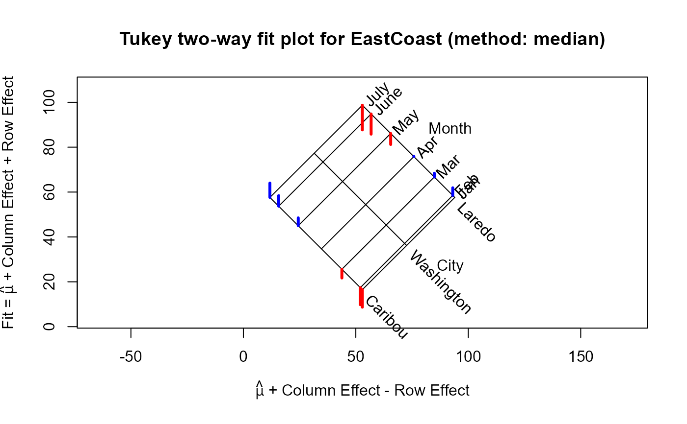
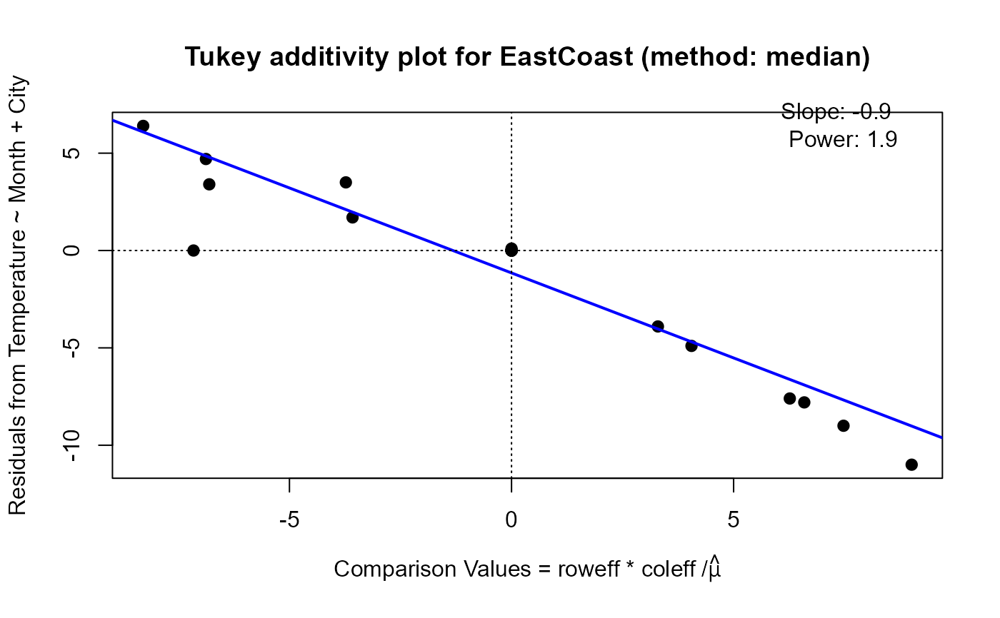

Companion to Arizona: monthly mean temperatures for three cities spanning a wide
range of latitudes along the East Coast (Laredo, TX; Washington, DC; Caribou, ME),
used by Tukey (1977) as a second example of a two-way (row + column) fit.
Format
a matrix of 7 rows (Month, Jan–July) and 3 columns (City: Laredo, Washington,
Caribou) where the value is mean monthly temperature in degrees F. The matrix has
a responseName attribute, "Temperature"
References
Tukey, J. W. (1977). Exploratory Data Analysis, Reading MA: Addison-Wesley. Exhibit 9 of chapter 10, p. 354
Examples
data(EastCoast)
(EC.2way <- twoway(EastCoast, method="median"))
#>
#> Median polish decomposition (Dataset: "EastCoast"; Response: Temperature)
#> Residuals bordered by row effects, column effects, and overall
#>
#> City
#> Month Laredo Washington Caribou roweff
#> + ----- ----- ----- + -----
#> Jan | 0.0 0.0 -7.8 : -18.2
#> Feb | 3.4 0.0 -7.6 : -17.3
#> Mar | 1.7 0.0 -3.9 : -9.1
#> Apr | 0.1 0.0 0.0 : 0.0
#> May | -4.9 0.0 3.5 : 10.3
#> June | -9.0 0.0 4.7 : 19.0
#> July | -11.0 0.0 6.4 : 22.9
#> + ..... ..... ..... + .....
#> coleff | 21.4 0.0 -19.7 : 54.4
#>
plot(EC.2way)

plot(EC.2way, which="diagnose")

#> Slope of Residual on comparison value: -0.9
#> Suggested power transformation: 1.9
#> Ladder of powers transformation: square